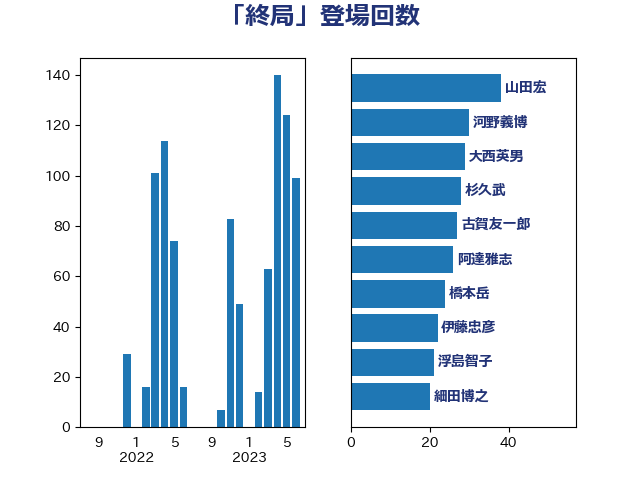

単語「終局」

| 山田宏 | 自由民主党 | 38 回 |
| 河野義博 | 公明党 | 30 回 |
| 大西英男 | 自由民主党 | 29 回 |
| 杉久武 | 公明党 | 28 回 |
| 古賀友一郎 | 自由民主党 | 27 回 |
| 阿達雅志 | 自由民主党 | 26 回 |
| 橋本岳 | 自由民主党 | 24 回 |
| 伊藤忠彦 | 自由民主党 | 22 回 |
| 浮島智子 | 公明党 | 21 回 |
| 細田博之 | 自由民主党 | 20 回 |
| 三ッ林裕巳 | 自由民主党 | 20 回 |
| 蓮舫 | 立憲民主党 | 19 回 |
| 塚田一郎 | 自由民主党 | 19 回 |
| 赤羽一嘉 | 公明党 | 18 回 |
| 竹内譲 | 公明党 | 18 回 |
| 上野賢一郎 | 自由民主党 | 18 回 |
| 馬場成志 | 自由民主党 | 16 回 |
| 平木大作 | 公明党 | 16 回 |
| 吉川沙織 | 立憲民主党 | 16 回 |
| 酒井庸行 | 自由民主党 | 15 回 |
| 根本匠 | 自由民主党 | 15 回 |
| 高橋克法 | 自由民主党 | 14 回 |
| 平口洋 | 自由民主党 | 14 回 |
| 宮内秀樹 | 自由民主党 | 14 回 |
| 黄川田仁志 | 自由民主党 | 13 回 |
| 鶴保庸介 | 自由民主党 | 13 回 |
| 尾辻秀久 | 無所属 | 12 回 |
| 古川俊治 | 自由民主党 | 12 回 |
| 古屋範子 | 公明党 | 11 回 |
| 鈴木馨祐 | 自由民主党 | 10 回 |
| 義家弘介 | 自由民主党 | 10 回 |
| 笹川博義 | 自由民主党 | 10 回 |
| 山下雄平 | 自由民主党 | 10 回 |
| 城内実 | 自由民主党 | 10 回 |
| 牧山ひろえ | 立憲民主党 | 9 回 |
| 斎藤嘉隆 | 立憲民主党 | 9 回 |
| 鬼木誠 | 立憲民主党 | 8 回 |
| 長谷川岳 | 自由民主党 | 8 回 |
| 豊田俊郎 | 自由民主党 | 8 回 |
| 笠井亮 | 日本共産党 | 8 回 |
| 石橋通宏 | 立憲民主党 | 8 回 |
| 矢倉克夫 | 公明党 | 8 回 |
| 木原稔 | 自由民主党 | 8 回 |
| 山本順三 | 自由民主党 | 8 回 |
| 仁比聡平 | 日本共産党 | 7 回 |
| 中根一幸 | 自由民主党 | 7 回 |
| 稲田朋美 | 自由民主党 | 6 回 |
| 末松信介 | 自由民主党 | 6 回 |
| 佐藤信秋 | 自由民主党 | 6 回 |
| 石田真敏 | 自由民主党 | 5 回 |
| 江田憲司 | 立憲民主党 | 5 回 |
| 松沢成文 | 日本維新の会 | 5 回 |
| 山東昭子 | 自由民主党 | 5 回 |
| 山口俊一 | 自由民主党 | 5 回 |
| 阿部知子 | 立憲民主党 | 4 回 |
| 関芳弘 | 自由民主党 | 4 回 |
| 鈴木宗男 | 日本維新の会 | 4 回 |
| 福岡資麿 | 自由民主党 | 4 回 |
| 滝沢求 | 自由民主党 | 4 回 |
| 徳永エリ | 立憲民主党 | 4 回 |
| 大塚拓 | 自由民主党 | 4 回 |
| 古賀之士 | 立憲民主党 | 4 回 |
| 佐々木さやか | 公明党 | 4 回 |
| 長島昭久 | 自由民主党 | 3 回 |
| 福島みずほ | 社会民主党 | 3 回 |
| 松島みどり | 自由民主党 | 3 回 |
| 宮本岳志 | 日本共産党 | 3 回 |
| 古川禎久 | 自由民主党 | 3 回 |
| 原口一博 | 立憲民主党 | 3 回 |
| 青山周平 | 自由民主党 | 2 回 |
| 階猛 | 立憲民主党 | 2 回 |
| 鈴木義弘 | 国民民主党 | 2 回 |
| 足立康史 | 日本維新の会 | 2 回 |
| 梅村みずほ | 日本維新の会 | 2 回 |
| 松村祥史 | 自由民主党 | 2 回 |
| 松下新平 | 自由民主党 | 2 回 |
| 本村伸子 | 日本共産党 | 2 回 |
| 岩渕友 | 日本共産党 | 2 回 |
| 安江伸夫 | 公明党 | 2 回 |
| 塩川鉄也 | 日本共産党 | 2 回 |
| 和田政宗 | 自由民主党 | 2 回 |
| 古賀篤 | 自由民主党 | 2 回 |
| 倉林明子 | 日本共産党 | 2 回 |
| 伊藤岳 | 日本共産党 | 2 回 |
| 井上哲士 | 日本共産党 | 2 回 |
| 青木一彦 | 自由民主党 | 1 回 |
| 阿部弘樹 | 日本維新の会 | 1 回 |
| 谷合正明 | 公明党 | 1 回 |
| 舟山康江 | 国民民主党 | 1 回 |
| 米山隆一 | 立憲民主党 | 1 回 |
| 福島伸享 | 無所属 | 1 回 |
| 田村貴昭 | 日本共産党 | 1 回 |
| 牧義夫 | 立憲民主党 | 1 回 |
| 海江田万里 | 立憲民主党 | 1 回 |
| 浜田靖一 | 自由民主党 | 1 回 |
| 櫻井周 | 立憲民主党 | 1 回 |
| 森英介 | 自由民主党 | 1 回 |
| 森屋宏 | 自由民主党 | 1 回 |
| 末松義規 | 立憲民主党 | 1 回 |
| 川合孝典 | 国民民主党 | 1 回 |
| 岩谷良平 | 日本維新の会 | 1 回 |
| 山添拓 | 日本共産党 | 1 回 |
| 山崎誠 | 立憲民主党 | 1 回 |
| 山下芳生 | 日本共産党 | 1 回 |
| 小沼巧 | 立憲民主党 | 1 回 |
| 小林鷹之 | 自由民主党 | 1 回 |
| 大野泰正 | 自由民主党 | 1 回 |
| 嘉田由紀子 | 無所属 | 1 回 |
| 吉田宣弘 | 公明党 | 1 回 |
| 吉川元 | 立憲民主党 | 1 回 |
| 伊東信久 | 日本維新の会 | 1 回 |
| 三浦信祐 | 公明党 | 1 回 |